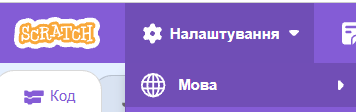

Інтерфейс Scratch 3
Запуск
Для запуску Scratch 3 слід виконати: Пуск → Усі програми → Scratch 3 або використати значок на Робочому столі.
Вибір мови

Натисніть кнопку в головному меню ⚙️Налаштування🔻 та оберіть українську мову.
Вікно Scratch 3
Поділене на 4 основні області:
- Палітра блоків — містить команди, розподілені на 9 груп.
- Область скриптів — панель для складання програм.
- Область сцени — демонстрація виконання команд (розмір 480×360 кроків).
- Область спрайтів — перелік усіх виконавців у проєкті.
Візуалізація інтерфейсу
Основні поняття
Сцена (Stage)
Це область, де виконується програма. За замовчуванням на Сцені розташовано виконавця Рудий кіт. Розміри Сцени — 480 на 360 кроків виконавця. Початкове положення кота можна змінити, перетягнувши його.
Спрайт (Sprite)
Основні елементи в Scratch. Програма складається зі спрайтів та скриптів для керування ними. Спрайти можуть реагувати на інші спрайти та на дії користувача. Один зі спрайтів є поточним (обведений синьою рамкою).
Костюм (Costume)
Зовнішній вигляд спрайту. Можна змінювати за допомогою блоків групи Вигляд (наприклад, "змінити образ на..."). Це дозволяє створювати анімацію руху.
Призначення блоків
Блоки зафарбовані різними кольорами відповідно до їх призначення. При поєднанні блоків отримуємо скрипти, у яких блоки виконуються по черзі.
Рух (Сині)
Вигляд (Фіолетові)
Керування (Коричневі/Оранжеві)
Блоки керують діями. Наприклад, блок "коли 🚩 натиснуто" визначає, що робити, якщо натиснутий прапорець.
Практика та Приклади
Приклад 1: Кіт переслідує вказівник миші
Навчимо спрайт кота рухатися, переслідуючи вказівник миші.
- Відкрий групу команд Керування.
- Перетягни в Область скриптів блок Завжди.
- Відкрий групу команд Рух.
- Перетягни блок Слідувати за і помісти його всередину блоку Завжди.
- Перетягни блок Перемістити на 10 кроків і помісти його всередину блоку Завжди.
- Клікни будь-яку команду цієї програми. Кіт почне переслідувати вказівник миші.
Приклад 2: Малювання червоного квадрату
Скласти для Рудого кота програму малювання червоного квадрату.
Спочатку потрібно додати розширення "Олівець" (кнопка "Додати розширення" в лівому нижньому куті).
Збереження та відкриття проєктів
Збереження
Виконай: Файл → Вивантажити на ваш комп'ютер.
Відкриється вікно Зберегти проект, де потрібно вибрати папку, ввести ім'я файлу та натиснути Зберегти.
Відкриття
Виконай: Файл → Завантажити з вашого комп'ютера.
Обери раніше збережений файл проєкту на своєму пристрої.
Контрольні питання
1. Назвіть основні області головного вікна Scratch 3 та їх призначення.
Вікно поділене на 4 області: Палітра блоків (містить команди), Область скриптів (панель для складання програм), Область сцени (демонстрація виконання), Область спрайтів (перелік усіх виконавців).
2. Що таке спрайт, сцена та костюм у середовищі Scratch? Як вони взаємодіють між собою?
Сцена — область виконання програми. Спрайт — основний елемент (виконавець), який реагує на команди. Костюм — зовнішній вигляд спрайту. Спрайти розміщуються на Сцені, а їхній вигляд змінюється за допомогою Костюмів.
3. Опишіть алгоритм створення програми, в якій спрайт малює червоний квадрат.
Потрібно додати розширення "Олівець". Використати блоки: очистити все, надати олівцю колір (червоний), задати розмір, опустити олівець. Далі цикл "повторити 4": перемістити на 100 кроків, поворот на 90 градусів. Наприкінці — підняти олівець.
4. Як змінити мову інтерфейсу Scratch на українську та додати команди групи "Олівець"?
Мова змінюється через кнопку глобуса в головному меню. Група "Олівець" додається через кнопку "Додати розширення" (внизу ліворуч) та вибору відповідного розширення.
5. Яку послідовність дій потрібно виконати для збереження проєкту на комп'ютері?
Файл → Вивантажити на ваш комп'ютер → вибір папки → введення імені файлу → кнопка "Зберегти".